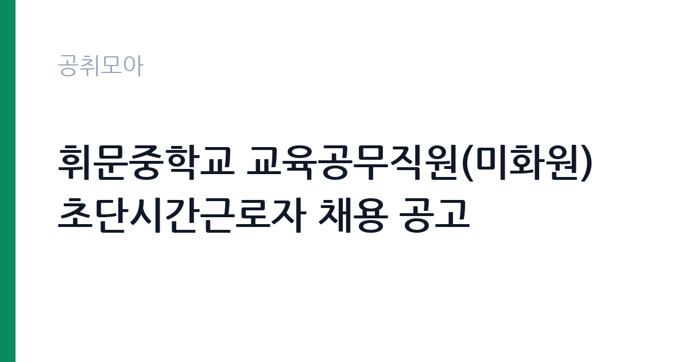

[교육청] 휘문중학교 교육공무직원(미화원) 초단시간근로자 채용 공고
서울특별시교육청 서울특별시강남서초교육지원청 휘문중학교 · 서울 · 마감 2026-09-29 (D-7) · 출처 나라일터

한눈에 보는 모집 조건
| 기관 | 서울특별시교육청 서울특별시강남서초교육지원청 휘문중학교 |
|---|---|
| 공고명 | 휘문중학교 교육공무직원(미화원) 초단시간근로자 채용 공고 |
| 고용형태 | 공무직 |
| 근무지 | 서울 |
| 게시일 | 2026-09-22 |
| 마감일 | 2026-09-29 (D-7) |
지원자격, 이렇게 읽으세요
- 미화원(초단시간근로자) 1명
- 접수 ~2026-09-29 마감
- 세부 조건은 원문 공고문 확인
모집 분야는 교육공무직원 미화원 초단시간근로자로, 별도의 자격 제한 없이 지원하실 수 있습니다. 미화 업무 특성상 성실함과 건강이 중요하며, 학교라는 공간의 특성을 이해하는 태도가 필요합니다. 이메일 접수로 진행되니 제출서류를 파일로 미리 준비하시기 바랍니다. 마감 시각이 9월 29일 오전 9시로 이른 편이니 주의하시기 바랍니다.
이 공고의 포인트
첫 번째 포인트는 초단시간 근무라는 점입니다. 하루 중 일부 시간만 일하므로 육아나 학업, 다른 일과 병행하기 좋습니다. 두 번째로 강남 소재 중학교라 교통이 편리하고 근무 환경이 안정적입니다. 세 번째로 교육공무직원 신분으로 학교에서 근무하므로 방학 등 학사 일정에 따른 근무 조정이 있을 수 있습니다. 짧은 시간 일자리를 찾는 분께 적합합니다.
전형은 어떻게 진행되나
전형은 서류전형과 면접전형으로 진행되는 것이 일반적이며, 세부 일정은 원문 공고에서 확인하시기 바랍니다. 응시방법은 이메일 접수로, 마감일 오전 9시까지 도착해야 합니다. 이메일 제목과 첨부파일 형식 등 접수 요령을 원문에서 확인하시기 바랍니다.
원문에서 확인한 전형 방식
○ 모집분야 : 교육공무직원(미화원) 초단시간근로자 ○ 고용형태 : 기간제(시급제) ○ 접수기간 : 2026. 9. 22.(화) ~ 2026. 9. 29.(화) 09:00까지 ○ 응시방법 : 이메일(didwlsrb94@sen.go.kr) ○ 문의처 : 02-500-9791
이런 분께 추천해요
- 짧은 시간 일자리를 찾는 서울 지역 구직자
- 학교 미화 업무 경험이 있으신 분
- 본업·육아와 병행 가능한 초단시간 근무를 원하시는 분
지원 전 체크리스트
- 초단시간의 근무시간과 시급 조건을 원문에서 확인했습니다
- 이메일 접수처와 마감 시각(9월 29일 09시)을 확인했습니다
- 제출서류를 파일로 준비했습니다
- 학교 근무 가능 여부를 점검했습니다
모집 일정과 제출 타이밍
접수는 9월 22일부터 9월 29일 오전 9시까지입니다. 마감 시각이 오전 이른 시간이므로 전날까지 발송을 마치시기 바랍니다. 서류 합격자 발표와 면접은 마감 직후 진행될 것으로 보이니 일정을 비워두시기 바랍니다.
직무 이해하기: 교육청
미화원 초단시간근로자는 중학교 교실과 복도, 화장실 등의 청소와 환경 정비를 맡습니다. 수업 전후의 정해진 시간에 집중적으로 작업하며, 쓰레기 분리배출과 위생 관리를 수행합니다. 서울 강남의 휘문중학교에서 근무하며, 교육청 카테고리의 공무직 공고입니다. 미화 업무는 학생들의 등교 전에 마무리되는 경우가 많아 이른 시간 근무가 포함될 수 있습니다. 방학 기간에는 대청소와 시설 정비 등 평소와 다른 업무가 배정될 수 있습니다.
자기소개서 작성 팁
지원서류에서는 미화나 청소 관련 경험과 성실함을 중심으로 기술하시기 바랍니다. 학교나 공공시설 근무 경험이 있다면 구체적으로 제시하시기 바랍니다. 학생들의 학습 공간을 깨끗이 유지하겠다는 책임감을 전달하시기 바랍니다.
면접 준비 포인트
면접에서는 근무 가능 시간과 건강 상태를 확인할 가능성이 큽니다. 초단시간 근무에 대한 이해와 꾸준한 출근 의지를 보여주시기 바랍니다.
급여·근무조건 읽는 법
보수 수준은 원문 공고문에서 확인하셔야 합니다. 초단시간근로자의 급여는 시급제로 지급되며, 교육공무직원 보수 기준이 적용됩니다. 정확한 시급과 근무시간, 주휴수당과 4대 보험 적용 여부는 원문에서 확인하시기 바랍니다. 초단시간근로라도 근로기준법의 보호를 받으며, 주휴수당과 연차의 적용 여부는 근무시간 요건에 따라 달라집니다. 본인의 근무시간 조건을 원문에서 확인하시기 바랍니다.
자주 묻는 질문
- 초단시간근로자는 무엇입니까
주 15시간 미만의 짧은 시간 근무하는 형태가 일반적입니다. 정확한 근무시간과 시급은 원문 공고문에서 확인하시기 바랍니다. - 접수는 어떻게 합니까
이메일(didwlsrb94@sen.go.kr)로 접수하며, 마감은 9월 29일 오전 9시입니다. 제목과 첨부 형식은 원문에서 확인하시기 바랍니다. - 어떤 일을 합니까
중학교 교실과 복도, 화장실 등의 청소와 환경 정비를 맡습니다. 정해진 시간에 집중적으로 작업하는 형태입니다.
함께 보면 좋은 공고
[교육청] 전북특별자치도교육청 지방일반임기제공무원( 학생수련지도) 경력경쟁임용시험 시행 계획 공고 — 마감 2026-10-02[교육청] 경상남도교육청 지방임기제공무원(8급) 공개모집 공고 — 마감 2026-10-08[교육청] 인천운서중학교 특수교육대상학생 보조인력(자원봉사자) 모집 공고 — 마감 2026-09-28출처: 나라일터 공개정보를 바탕으로 공취모아가 정리한 안내글입니다. 모집 조건·일정은 변경될 수 있으니 지원 전 반드시 원문 공고문을 확인하세요. 본 글은 정보 제공용이며 합격을 보장하지 않습니다.